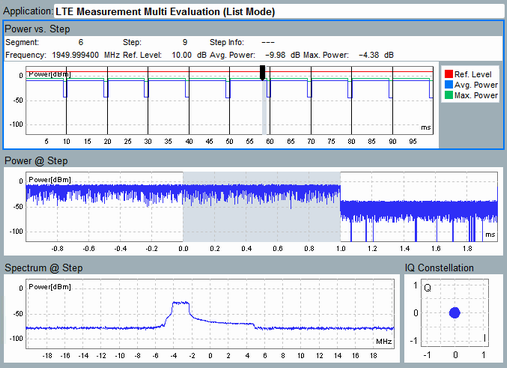

The capture buffer analyzer reads the capture buffer and displays the data in several diagrams. The following figure shows an example.

The capture buffer contains the raw I/Q data captured by the last running firmware application, during the last measurement interval. The data was captured immediately before the measurement was stopped and the measurement state changed to RDY.
The line "Application" at the top of the "Capture Analyzer" tab displays which firmware application has captured the data.
Without list mode, a measurement interval contains a single segment. With list mode, a measurement interval contains the entire sequence of measured list mode segments.
Each segment is divided into numbered steps. Most diagrams show data captured in one step. You can select the displayed step via the hotkey "Segment Number".
- "Power vs Step" diagram
The diagram shows the power vs time, for the entire buffer duration. For list mode measurements, vertical black lines indicate the segment borders.
The selected step is marked by a gray area.
Above the diagram, the selected segment number and the selected step number are listed. The "Step Info" shows problems detected for the selected segment, for example overflow. At the beginning of the gray area, there are markers. The second line above the diagram shows information about the marker positions. - "Power @ Step" diagram
Power vs time diagram for the selected step and the adjacent steps. The time period of the selected step is marked by a gray area. - "Spectrum @ Step" diagram
Spectrum diagram (power vs frequency) for the selected step. - "IQ Constellation" diagram
I/Q constellation diagram for the selected step.
Hotkey | Description |
|---|---|
"Select Trace" | Hides or shows the individual traces. |
"X Scale... / Y Scale..." | Modify the ranges of the X-axis and the Y-axis. |
You can maximize a single diagram by double-clicking it. To restore the original size, double-click it again.
To save the results to a file, see "Save IQ Data hotkey".